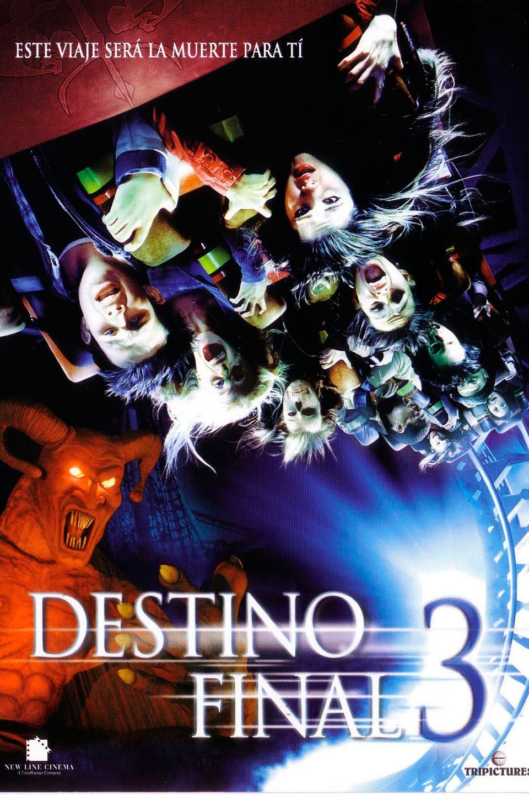

Destino Final 3 (2006)
Director: James Wong
Descripción: Un grupo de jóvenes se salva de morir en un accidente de montaña rusa gracias a la premonición de una de las chicas. Nuevamente, la muerte los acecha.
Características: Suspenso, Terror, Fotografía que predice muertes.